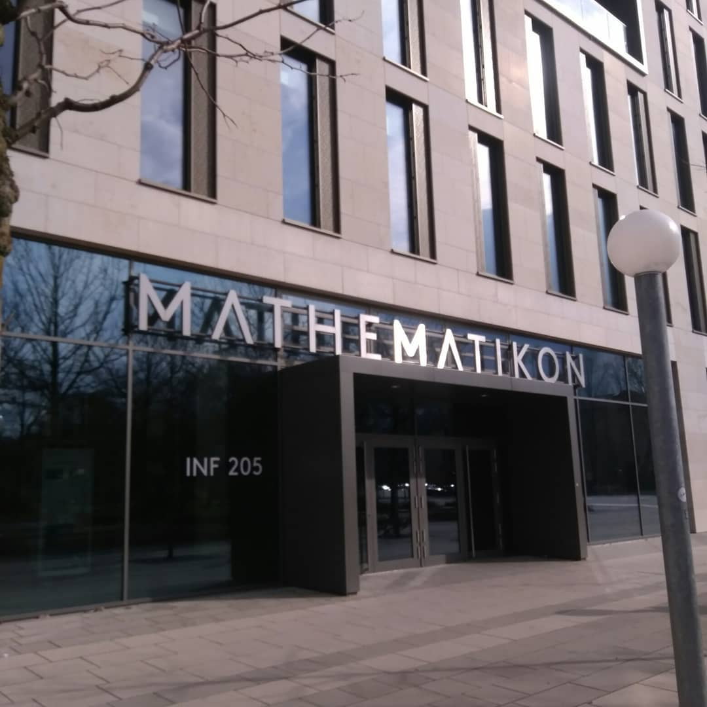

ISHIZAKA Hiroki, Ph. D. (Dr.)
石坂 宏樹
Independent Researcher — Numerical Analysis, Partial Differential Equations, and Finite Element Methods
AI Evaluator (Mathematics / Reasoning / Numerical Methods)｜Scientific-Computing SME (PDEs & FEMs)
JP/EN｜日本数学会員｜日本応用数理学会員
Profiles
ResearchGate Google Scholar researchmap arXiv ORCID Slides X
Research philosophy
Mathematics makes the invisible visible. My primary interest is not merely to reproduce visible phenomena by computation. I am more interested in identifying and expressing the invisible mathematical structures that generate, constrain, or distort what we observe.
In my research, the “invisible” includes discretisation error, the influence of mesh geometry, unresolved scales, latent states, memory, dissipation, and the limits of numerical prediction. These effects are not usually observed directly, but mathematics can represent them through operators, norms, memory kernels, measures, internal variables, geometric parameters, and computable error bounds. The aim is to determine what has been omitted, how the omitted structure acts on observable dynamics, and which conclusions remain mathematically valid.
This philosophy leads to two mathematically distinct research programmes:
-
Certified finite element analysis under computable geometric conditions
計算可能な幾何条件に基づく，保証付き有限要素解析
making discretisation error and the hidden influence of mesh geometry quantitatively visible; -
Stable reduction theory for unresolved dynamics
未解像ダイナミクスの安定縮約理論
making the dynamical influence of eliminated scales and latent states visible through memory, internal states, effective dissipation, and nonlocal closure.
The two programmes are not the same theory. Finite element analysis approximates PDEs in computable spaces, whereas stable reduction studies the consequences of eliminating variables or scales. Their connection is philosophical rather than merely methodological: both seek to reveal effects that approximation can hide. Trustworthy simulation is one consequence of this work, not its sole starting point. A computation becomes trustworthy when its invisible errors, unresolved influences, stability mechanisms, and range of validity have been mathematically represented and controlled.
Programme I — Certified finite element analysis
A computed finite element field does not by itself reveal why its error has a particular size, which geometric defect controls that error, or where the approximation may cease to be reliable. A central question in my finite element research is therefore: how does the geometry of a computational mesh control approximation, stability, and certification? I study computable geometric conditions, including semi-regularity and flatness-type parameters, and use them to develop anisotropic error estimates for nonstandard finite elements such as Crouzeix–Raviart, Morley, discontinuous Galerkin, Nitsche, and mixed methods.
The long-term objective is to connect
\[ \text{scheme design} \;\times\; \text{mesh geometry} \;\times\; \text{error estimation} \;\times\; \text{verification} \;\longrightarrow\; \text{certified computation}. \]This includes discrete Sobolev and Korn inequalities, equilibrated fluxes, hypercircle-type estimates, dual-weighted residual methods, pressure-robust flow discretisations, and computable certificates for quantities of interest.
Programme II — Stable reduction theory for unresolved dynamics
I use the expression stable reduction theory for unresolved dynamics as an organising name for a mathematical programme that brings together memory equations, internal-state representations, nonlocal closure, structure-preserving reduction, and stability with respect to resolution and singular limits. It is not intended to denote one particular model-order-reduction algorithm. Rather, it identifies a common mathematical problem: how can unresolved variables be eliminated without erasing, misrepresenting, or destabilising the mechanisms through which they influence observable dynamics?
Observable variables do not display every mechanism that governs their evolution. Eliminating unresolved variables is therefore not the same as setting their influence to zero. A reduced model may have fewer variables and still be dynamically wrong if it erases the mechanisms carried by discarded scales. Low-amplitude or weakly observed components may still control dissipation, instability, boundary and internal layers, scale-to-scale transfer, long-time statistics, or rare events.
Dimension reduction removes variables. Stable reduction removes variables without erasing their dynamical influence. Here, “stable” does not refer only to the stability of a reduced finite-dimensional system. It also refers to the controlled transfer of energy, dissipation, causality, constraints, memory, and limiting structure from the full dynamics to the reduced description. The unresolved influence may survive as operator-valued memory, delayed or history-dependent forcing, effective dissipation, spatially nonlocal closure, internal states, or stochastic fluctuation. The central problem is therefore to determine what must remain after elimination, how accurately it must be represented, and which structural properties of the full dynamics survive reduction.
\[ \text{full dynamics} \longrightarrow \text{resolved / unresolved decomposition} \longrightarrow \text{elimination with retained influence} \] \[ \longrightarrow \text{memory, internal states, or nonlocal closure} \longrightarrow \text{stable reduced dynamics}. \]The objective is stronger than well-posedness of the reduced equation alone. A satisfactory reduction should retain, quantify, or correctly approximate the relevant stability, dissipation, causality, constraints, and singular-limit structure of the full system. It should also reveal when a chosen reduction suppresses an essential phenomenon.
Current work provides analytical ingredients for this programme through graph-space well-posedness, positive-type and measure-valued memory, kernel stability, internal-variable representations, and singular limits such as memory concentration and vanishing instantaneous coercivity. The next stage is to derive and approximate kernels and closure operators directly from unresolved generators, with applications to convection-dominated diffusion, incompressible flow, multiscale systems, and data-informed reduced models.
A further branch of the programme concerns stable reconstruction from partial observations. Not every unobserved variable should be eliminated: some latent states are physically or clinically meaningful and should remain as reconstruction targets, while finer unresolved variables are compressed into memory, effective internal states, nonlocal closure, or stochastic forcing. The resulting problem is to determine whether those retained latent states can be recovered stably from partial, noisy, and history-dependent observations, and to quantify how observation, kernel, closure, and initial-history errors propagate to reconstruction and prediction.
\[ \text{full dynamics} \longrightarrow \text{stable reduction} \longrightarrow \text{partial observation} \] \[ \longrightarrow \text{latent-state reconstruction} \longrightarrow \text{prediction and intervention}. \]This perspective includes, for example, the reconstruction of hidden internal states in multiscale physical systems and in disease-progression models, where directly visible measurements may not reveal the internal mechanisms that govern future evolution. The mathematical goal is not merely to fit hidden variables, but to establish observability, identifiability, stability, and uncertainty bounds for the reconstructed state.
Central questions include:
- Which unresolved mechanisms must be retained for the reduced model to remain dynamically faithful?
- Which state space, energy, constraints, and dissipation mechanisms survive elimination?
- Which latent states should be retained as reconstruction targets rather than eliminated?
- Under which observability and identifiability conditions can those states be recovered from partial and noisy history-dependent data?
- How do projection, observation, kernel, closure, and unresolved-initial-state errors propagate to reconstruction and resolved quantities?
- Do reduction, reconstruction, discretisation, homogenisation, and singular limits commute?
- How can lost or distorted phenomena be detected, bounded, and corrected?
Research Vision 18: Stable reduction theory for unresolved dynamics
Research architecture — G / R / A / V
The two programmes remain mathematically distinct, but they interact through four research lines. The links arise in structure-preserving approximation, multiscale error decomposition, and certification of what discretisation or reduction leaves unresolved:
- G — Geometry & Anisotropic FEM Theory
Computable geometric parameters, semi-regular meshes, anisotropic interpolation, nonconforming and mixed elements, discrete functional inequalities, and curved-domain geometry. - R — Reliable PDE Simulation & Reduction
Time-dependent and history-dependent PDEs, graph-space well-posedness, stable reduction of unresolved dynamics, pressure-robust Stokes/Navier–Stokes methods, and verified or goal-oriented error control. - A — Approximation, Automation & Learning
Adaptive FEM, mesh and method selection, structure-preserving approximation of memory and internal states, data-informed kernel identification, and connections with PINNs, Deep Ritz, and meshless methods. - V — Verification, Formal Reasoning & AI4Math
Computable certificates, equilibrated-flux and goal-oriented bounds, reproducible mathematical structure, AI-assisted reasoning, and future formalisation.
From invisible structure to trustworthy simulation
Trustworthy simulation is not the starting point of these programmes, but an important consequence. A visually plausible computation can still be wrong because discretisation leaves spatial or temporal structure unresolved, or because reduction deliberately eliminates variables and scales whose influence remains dynamically important. The mathematical task is to expose these hidden omissions and quantify their effects on stability, conservation, target quantities, extrapolation, and predictive validity.
This perspective provides a reliability layer linking PDE analysis, numerical discretisation, stable reduction, and verification. It is relevant to digital twins, scientific machine learning, and data-informed models, where simulations increasingly inform practical decisions but their hidden errors and unresolved mechanisms cannot be judged from visual agreement alone.
Broader contexts include Verification, Validation and Uncertainty Quantification (ASME VVUQ), physics-informed learning and its failure modes (PINN failure modes), and urban or disaster-oriented digital-twin simulation (Kobe digital-twin project).
Near-future directions
These directions develop mathematical representations of effects that are present but not directly visible.
- Stable reduction without dynamical erasure: identify which unresolved effects must survive as memory, internal states, effective dissipation, or nonlocal closure, and establish resolution- and singular-limit stability.
- Stable latent-state reconstruction: recover physically or clinically meaningful hidden states from partial, noisy, history-dependent observations, with observability, identifiability, and uncertainty estimates.
- Structure-preserving memory discretisation: combine finite internal states, convolution quadrature, and anisotropic CR–RT approximation.
- Certified error control for decision-making: provide computable error radii and certificates for quantities of interest.
- Reliability layers for surrogates and physics-ML: detect boundary-layer, extrapolation, conservation, and under-resolution failures.
- AI4Math-ready numerical analysis: organise geometric conditions, stability mechanisms, and error certificates in verifiable and reusable forms.
Website guide
- Publications lists published and preprint results.
- Research summarises completed and current research programmes.
- Research Visions collects open problems, long-term projects, and proposed directions.
- History of Geometric Conditions in FEM develops the geometric background of Line G.
- Blog and Supplementary Visions contain explanatory and exploratory material.
This site includes open research directions and proposals. Published and preprint results are labelled and linked on the Publications and Research pages.

左から，にこ淵・高樋沈下橋・佐田岬・ハイデルベルク大学図書館・Mathematikon・ハイデルベルク城・ドイツ バンメンタール